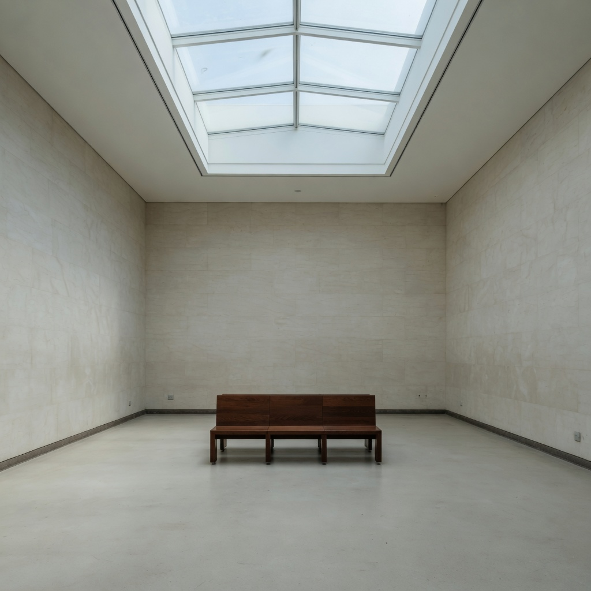

obs_0077

Prompt
Preserve the same subject, identity, pose, framing, crop, camera position, and key-light direction. Do not change wardrobe, props, or scene content. Do not restyle the picture into a period look, a movie still, or a genre. Change only diffusion. Set diffusion to: clear air, no diffusion filter, no atmospheric veil. Change only the scattering veil. Do not defocus the subject, do not add circular bokeh orbs on in-focus surfaces, do not glow the eyes, do not change lighting direction, do not change time of day, do not add grain, and do not restyle into a genre.
Seed: unavailable · tool: image_edit
Scores
| vector | score | conf |
|---|---|---|
| vec_optical_softness | 0.19 | 0.58 |
| vec_edge_softness | 0.17 | 0.52 |
| vec_diffusion | 0.08 | 0.76 |
| vec_bokeh_softness | 0.10 | 0.50 |
| vec_microcontrast | 0.60 | 0.50 |
| vec_halation | 0.06 | 0.50 |
| vec_highlight_bloom | 0.08 | 0.50 |
| vec_veiling_glare | 0.13 | 0.55 |
| vec_shadow_density | 0.28 | 0.40 |
| vec_black_level | 0.24 | 0.50 |
| vec_key_to_fill_ratio | 0.28 | 0.35 |
| vec_source_hardness | 0.30 | 0.35 |
| vec_highlight_rolloff | 0.35 | 0.35 |
Unintended changes
- none
Intended diffusion low.